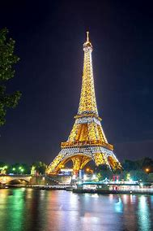
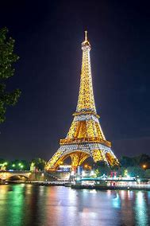

Lugares Turisticos
 
La Catedral de Notre Dame es uno de los más importantes patrimonios de la arquitectura gótica del mundo. Fue dedicada a la Virgen María en su construcción que tuvo origen entre 1163 y 1245.
Notre Dame ha sido lugar de importantes eventos de la historia francesa tales como la coronación de Bonaparte, de Enrique VI y la beatificación de Juana de Arco. También ha sido centro de mitos y rumores y escenario de una de las películas más famosas de Disney, el Jorobado de Notre Dame.

el Museo del Louvre es uno de los más relevantes de Francia y del mundo entero, lugar de un importante puñado de obras de los artistas más influyentes de la historia y de colecciones de arte de la monarquía francesa.
Forma parte de la fortaleza del Palacio del Louvre que originalmente constituyó una residencia real de carácter privado para los monarcas.
El museo suma actualmente 300 mil obras de antes de 1945, pero solo 35 mil están disponibles al público. Entre estas destacan La Gioconda, de Da Vinci, La Libertad Guiando al Pueblo, de Delacroix, la Venus, de Milo y El escriba sentado.